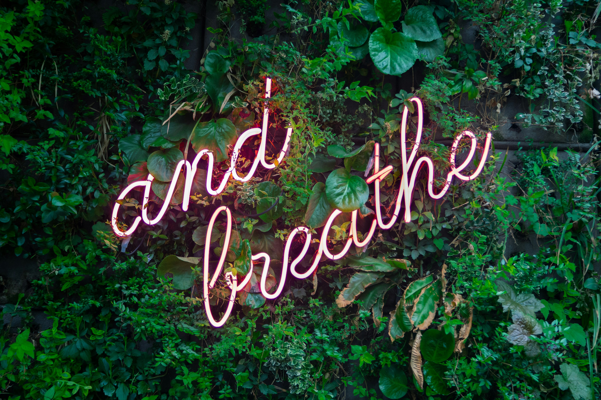

As we get into the summer months, the seasons shift, nature reminds us of something powerful: growth doesn’t always happen loudly. Sometimes it’s in the quiet reset, the intentional pause,
the small yet consistent choices we make. If you’ve been feeling a little out of sync lately—tired, unmotivated, or stuck—know that you’re not alone.
But here’s the good news: this season is your opportunity to thrive, not just survive.

So, what’s the secret? It’s not another trendy routine or a long list of to-dos. It’s this:
Thriving starts when you choose alignment over hustle, intention over autopilot, and nourishment over depletion.
Let’s break that down.
Start by asking yourself: What does thriving look like for me right now? It might be:
Your version of thriving doesn’t have to look like anyone else’s—and it shouldn't.
You can’t thrive if you’re running on empty. That means:
Thriving is biological before it's inspirational. Take care of your body so your mind and spirit can follow.
This season, make time for rest without guilt. Schedule quiet mornings, digital detox hours, or a walk without distractions. Stillness isn’t laziness—it’s a reset button for your nervous
system.
Try this: Start your day with 3 deep breaths and a sentence like, “I give myself permission to thrive.”
That includes:
Less noise = more clarity. More clarity = more alignment.
No one thrives in isolation. This might mean:
And if you need a reset, consider trying a seasonal wellness session or personalized self-care plan—it’s like spring cleaning for your soul.
Schedule your 1:1 health coaching session with us.

This Season Is Yours
You don’t need to do more—you need to do what matters. Whether you're entering a season of blooming or one of deep rest, give yourself the space to honor it.
Thriving isn’t a destination—it’s a daily decision.
THANKS FOR READING!
If you have any questions or would like more information on how we can support your wellness
goals, feel free to contact us and schedule a consultation today.